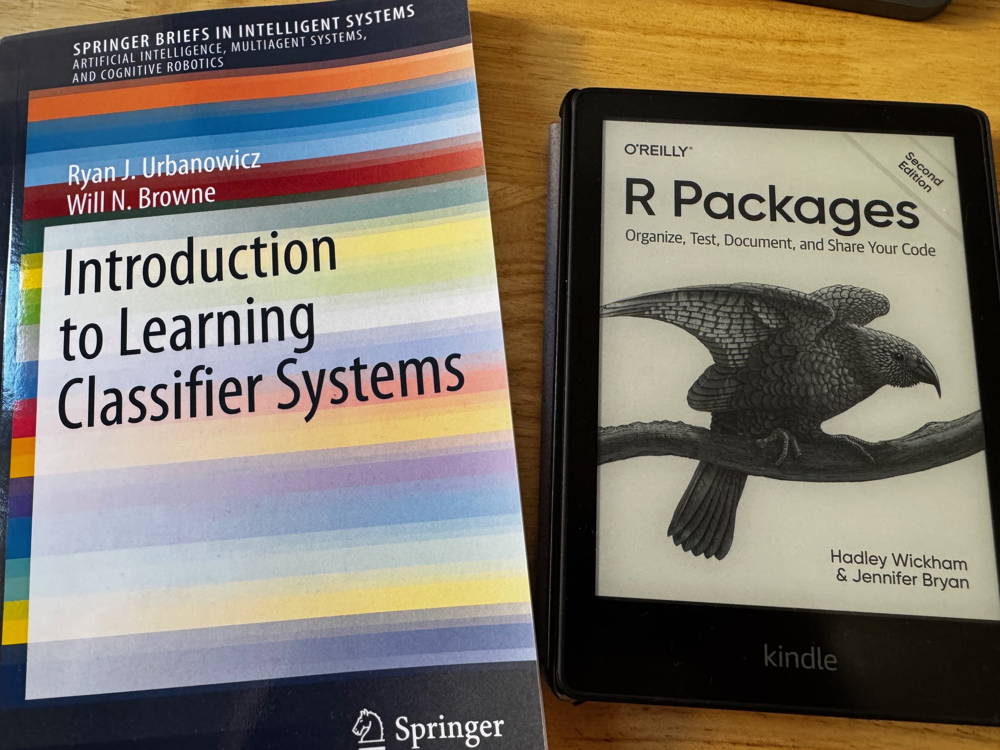

I’ve been thinking for a while…
Ever since I read about the concept in M. Mitchell’s book “Complexity The emerging science at the edge of order and chaos” some time last year (I think around this time of the year…), I have been thinking about this, in the background of my head.

The weird strings above, the 11##10### thing, might mean nothing to most right now (you have to look a bit further into it all, and I’ll probably try and explain some of it in the future), but it was a revelation to me when I first read it.
So yes, I’ve had other fish to fry for some time, but now it feels like I might just have the mental space to shift my focus a bit…
The new project
So here is my upcoming project, explained in one picture:

(By the way, a personal note here: buying that left book in physical format from Springer was one “tough cookie”, thank goodness I’m motivated, it’s quite possibly the priciest book I ever bought from my own pocket, in €-per-page… Oh well: It looks it still was the right call for me :D)
Why now? Why me?
As I said, I’ve been a bit busy. Full-time job, MSc paper (success!), then summer, learning other stuff, (did I mention full-time job? :D)… But it is time.
I also have been thinking for quite some time I should try my hand eventually at creating my own R Package. This was all the more true after the last R conferences I attended recently, where it looks like “everyone is doing it” in the R (mostly academic) community… So why not me?
Plus, I have an idea or two. So what if I’m not the greatest coder out there? I still do have some tricks in my sleeves ;) I have proved (at least to myself) I can do highly distributed processing using (among other things) R and create my own thing. (My very own algorithm, that was.)
Plus, I’m into ML just as much as the next person, but I’ve also played quite a bit with Genetic Algorithms recently. And I believe I have all it takes to put that to good use here. (I’m just a bit sad this will not involve Network Graphs, the way I have it designed (yet, anyway :D).) I believe I understand how the LCS algorithms might be particularly useful in their own specific way. I can see in my head how they must work, what makes them different, all in spite of not having written one line of code yet.
Now, it might take a while, indeed. Why, with the Holiday season coming, the day job and all. But I have a sort of a plan in mind, already an architecture (in my head, for now), examples of how I would want to validate the implementation (that last thing, one example with application to cybersecurity and logs classification, in particular, woke me up in the middle of the night a couple of weeks back).
And R packages, from what I have read thus far, are not “magic”. It’s going to be work, for sure, but I don’t see anything I can’t manage. If anything, it’s less complicated than I thought. I’ve already played with testthat, microbenchmark, I’ve always separated my code in functions, separated R and C++ code, all that… So yeah, I think I’m up to the task.
And finally, a note about the “why now”: I can’t find it done yet!! Which to me is quite incredible. I have found this niche, that nobody (in the R community) has deemed relevant enough thus far, and I am willing to put the work towards filling that niche!
The outcome
This here today is me announcing, basically, my intention to create and (hopefully) get my future new RLCS package onto CRAN. I know, I know, I’m getting WAAAAY ahead of myself here.
And I realize me publishing this entry might very well mean someone beats me to it. If that happens, well… I’m already convinced my implementation will be “competitive”, so… let’em!
(Plus, why would anyone decide to go for this now? It would just make no sense whatsoever - if not to bother me. If that’s you: Just give me a few months, and you’ll save yourself the trouble :D)
Will I manage?
It turns out, for some reason, I know I will. Obviously, I don’t “know know”, it’s more of a feeling.
I am enthused, to begin with. I have the knowledge. Time is not an issue, although it will take me probably a few months (my best estimate right now, given my current known agenda, is 3-4 months for a functional package, plus whatever time it takes for submission to CRAN of a “v001”).
Moreover, I somehow needed a new, rather difficult, interesting long-term personal objective. I feel this will help me get in the “flow”, which is a great feeling (but hard to come by).
Also, I have this crazy idea that, once the thing works, I can dive further into it and study it towards a bigger goal, maybe research, ideally even (who knows) a PhD…?
What about the sessions on ML?
I’ve done my first (of two) presentation about “Background of ML for Cybersecurity”. I actually had trouble with some of the demos during the first session :S But not because of the demos themselves, just, “heat of the moment”, computer resources, demo effect, and so on. Nothing major.
Thankfully, I get a second chance, as there is a second session coming. And I have time to prepare some more examples, so that’s good too, the second session will be all-the-more interesting.
But because I have some time, I’m making a pause there and re-focusing on this new project of mine as a personal interest thing.
And what about the migration of the old blog?
I realize nobody cares, but heck: I do. I need to “migrate”, move everything (while reviewing each thing) from the old blog to this new setup, because.. Well, because this platform is more convenient, and – let’s be honest – cheaper… After all, it’s one thing to write for one own’s pleasure, and quite another to spend money with no return year after year just to maintain it.
So yes, I need to organize myself to minimize future costs a bit (it just is the sensible thing to do, economically).
Conclusions
**This is important: I still don’t really know why this family of algorithms have received sooo little attention**, beyond the fact that “Connectionism” has received a lot of said attention (deservingly, for sure).
But I’m curious about whether LCS can be made (ideally equally) valuable. And I have the personal conviction that I am in the right position to dig further into it.
And so it is time, I’m in an ideal position, and I’m motivated.
Now all I have to do is… Start!
(To start hear means also put thoughts to paper, design, code, test, document… Don’t expect lots of news too soon, either! I’m not in a hurry, nobody should be: this thing has been known since the 70’s and it looks like few - aside from noted exceptions - have cared about it thus far…)
References
This is the best intro explaining the algorithm that I found thus far - and if anything it confirmed I was on the right path. It just makes a lot of sense to me!